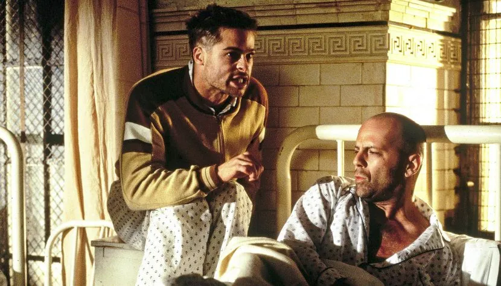
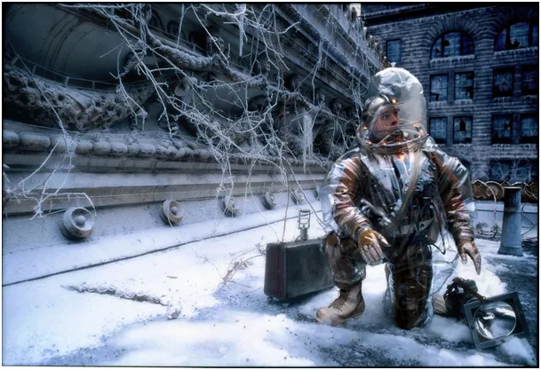
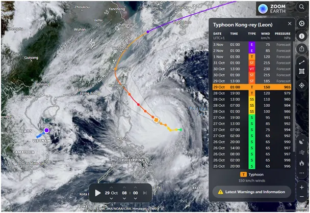
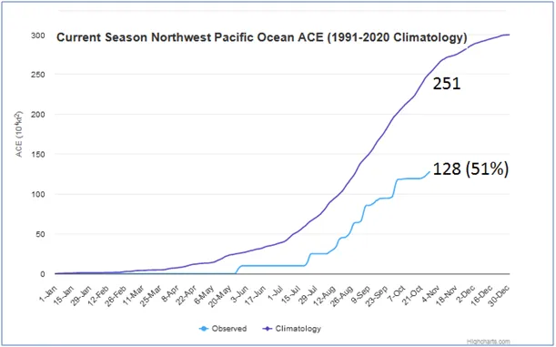

Wszyscy zginiemy!
...takie było przesłanie filmu "12 małp" Terry’ego Gilliama w 1995 roku. Oczywiście mordercą miał być wirus. Kocham kino, w tym czasie miałem nawet swój program o kinie w prywatnej, dużej TV, ale akurat był to moment, gdy zdecydowałem, że do kina więcej nie pójdę, bo ono robi się skrajnie idiotyczne i wulgarne. Wspomniany "dreszczowiec" obejrzałem niedawno z uśmiechem na ustach. Wiem ze statystyk, że filmów o zagładzie z powodu wirusów i huraganów wyprodukowano w tamtym czasie krocie i były to doskonałe, wielkie produkcje, które widziała większość ludzi, wtedy jeszcze na salach kinowych.

Kino ma swój specjalny urok, a wysokie skupienie widowni gwarantuje, że emocje i przekaz zostaną głęboko wdrukowane w umysły. Po kilku dekadach takiego programowania, gdy w marcu 2020 wydano rozkaz "umieramy" wszyscy posłusznie zamknęli się w domach czekając na zagładę. Było można zrobić zakupy stojąc w kolejkach kolejkach na zimnym powietrzu i dziś śmiało powiem, że to był najbardziej śmiertelny czynnik tamtego czasu. Przez dwa lata obserwowałem kasjerki w kilku dużych sklepach w pobliżu, rzadko jakiś katar, zero strat na tej linii walki z "wirusem". Nie oglądałem tych wszystkich filmów i z racji swego zawodu postanowiłem policzyć jak szybko umrę i czy warto stać w kolejce pod "biedrą" i robić nadmierne zakupy, które po mojej śmierci będą zjadać gryzonie. Wyniki tych obliczeń znacie, podsumowanie jest tu: https://www.youtube.com/watch?v=NT69DzmgaYw
Dziś świat jest poddawany tresurze przy pomocy "niszczącej siły" żywiołów rozgniewanej planety. Nagminne komunikaty są całkiem sprzeczne z obserwacjami. Energia i czas występowania cyklonów od trzech dekad maleje (dwa moje poprzednie wpisy są o tym), ale słyszymy nagminnie, że jest odwrotnie. Właśnie na Tajwan i Chiny kieruje się Tajfun Leon, który osiągnie klasę "brutalnego", wyżej od "super tajfunu" z wiatrem do 230 km/h nad oceanem. Nad lądem zwolni.

Jak zawsze w takich przypadkach będzie kilka ofiar, ale jak już wykazywałem na statystykach publicznych, łączna liczba zgonów w takich okresach maleje, bo ludzie siedzą w domu nie giną w wypadkach drogowych, czy utonięciach itp. W klasycznej ekonomi, każdy niszczycielski żywioł podnosi obroty, zmusza ludzi do dodatkowej pracy i nakręca gospodarkę i suma summarum cyklonu zatrzymać się nie da, więc rozdzieranie szat jest zbędne. Ale kto dziś myśli racjonalnie?

Obecny bilans energii cyklonów na północno-zachodnim Pacyfiku to zaledwie 51% normy z poprzednich trzech dekad, a sezon na tajfuny już się kończy. Wiemy to z serwerów publicznych uczelni w USA, które drugą ręką wypuszczają komunikaty o "nadciągającej zagładzie". Cel jest prosty, trzymać lud w ciągłym poczuciu zagrożenia, wtedy lud nie pyta, gdzie znikają nasze podatki.
Paweł Klimczewski